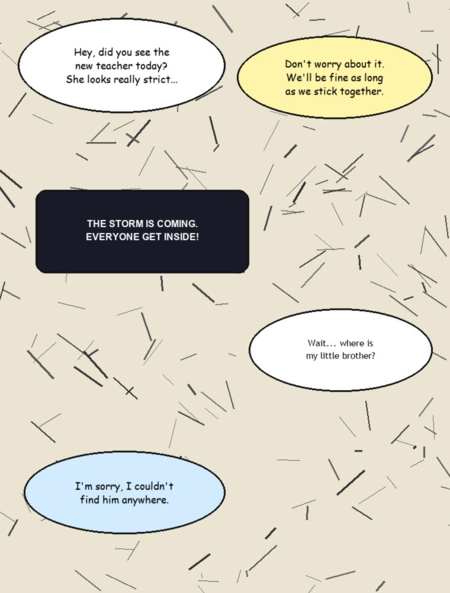
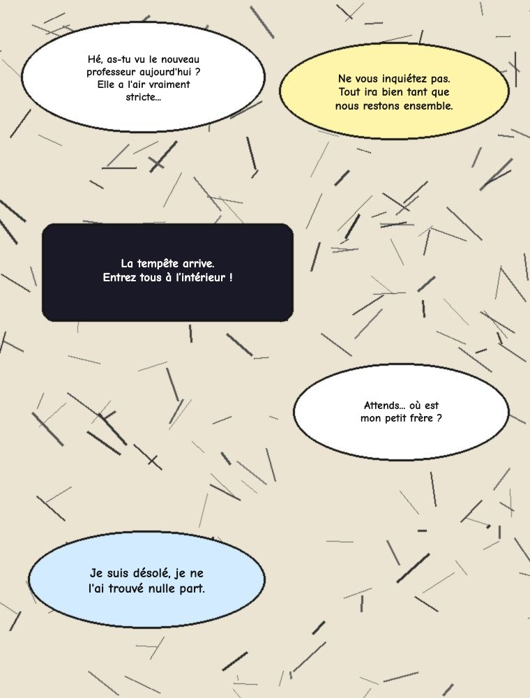

Gratuit, sans compte et sans pub. La lecture du texte se fait sur ton appareil ; la traduction s'affiche directement dans les bulles.


Le texte d'origine est effacé et remplacé par la traduction, à la couleur de la bulle.
L'extension traduit toutes les images de la page, en avance pendant que tu lis, ou automatiquement sur tes sites préférés.
Les images sont lues sur ton appareil. Seul le texte des bulles part au service de traduction. Aucune donnée collectée.
Pour traduire directement dans le navigateur, une version de l'extension pour Firefox Android est en préparation.